Les Insurgés
des déchets
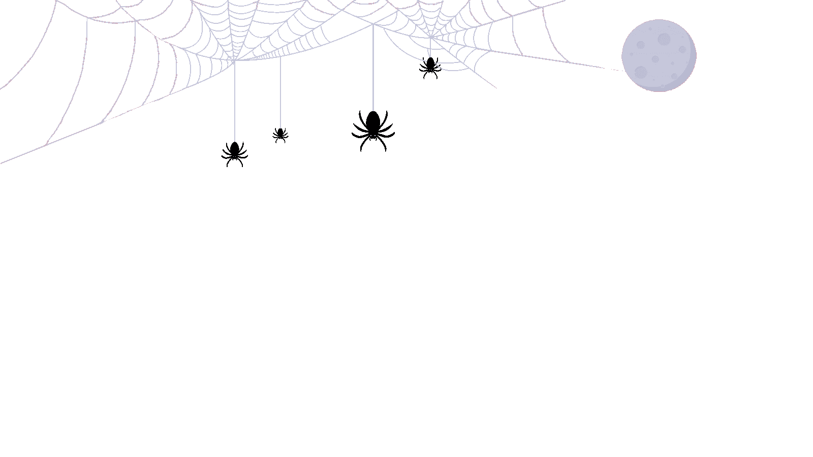
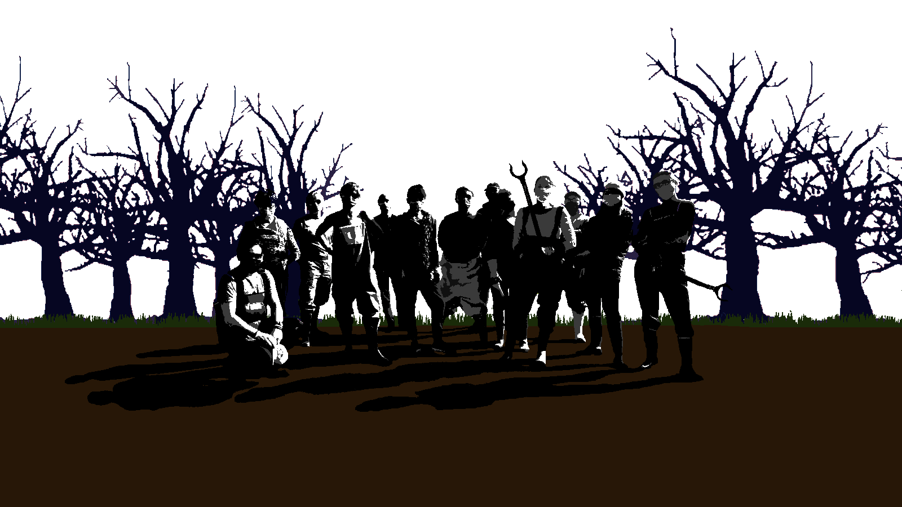
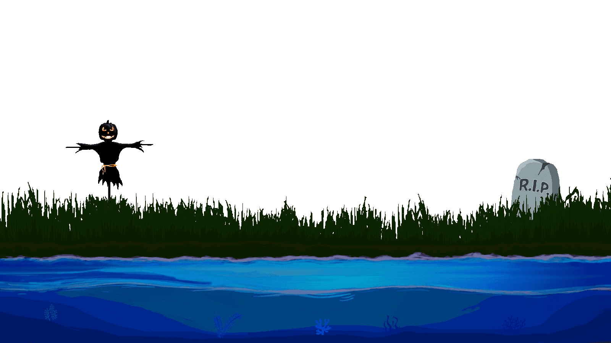
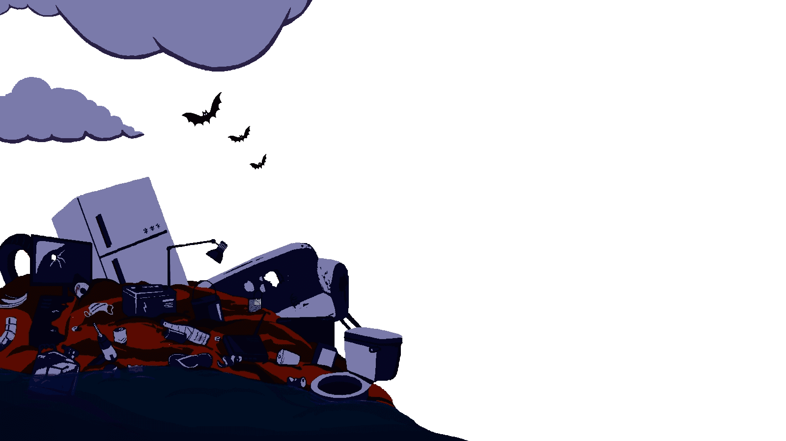
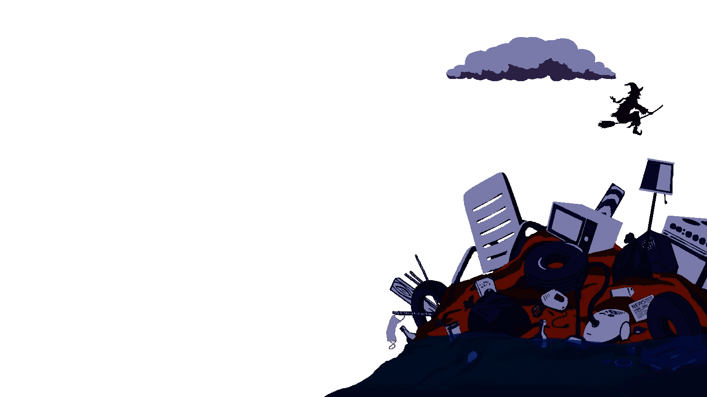
Les Insurgés
des déchets
 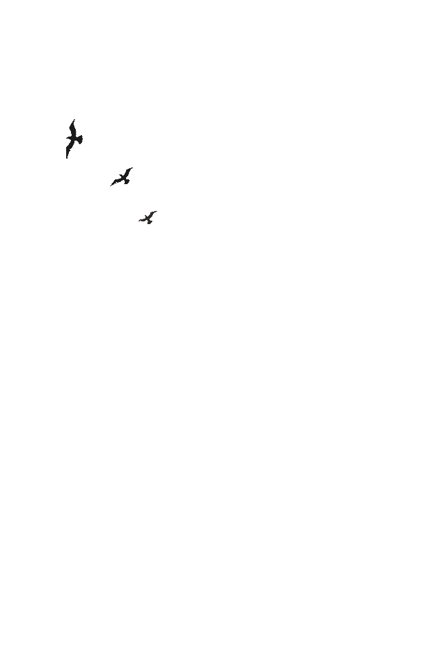
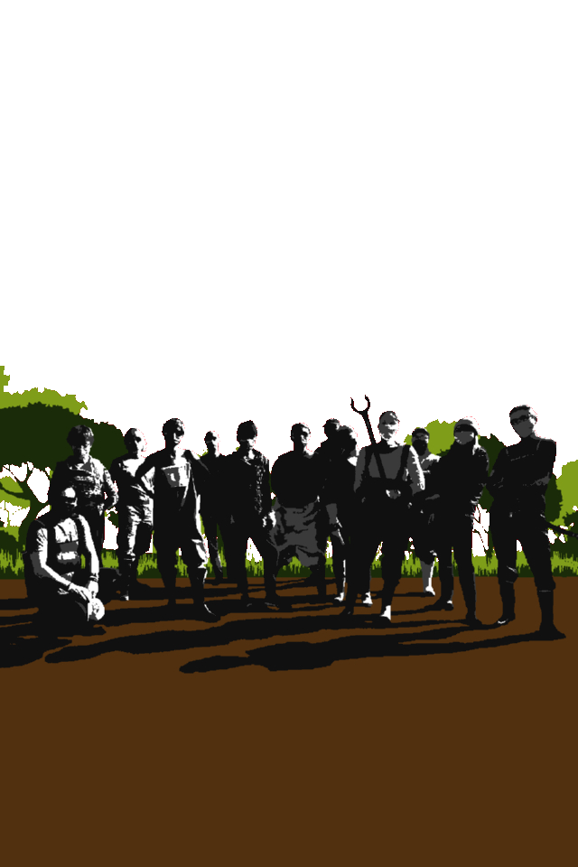
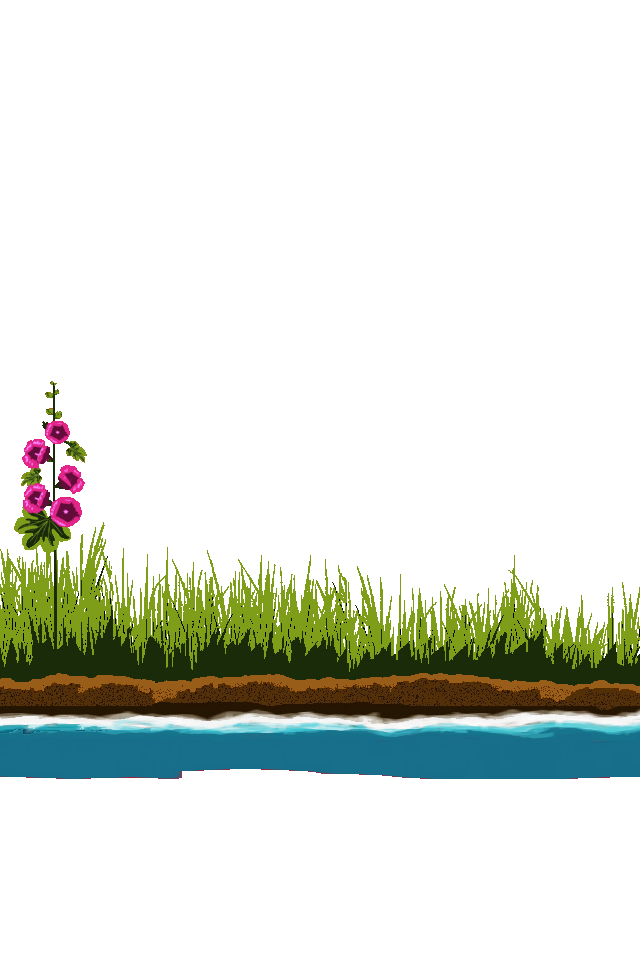
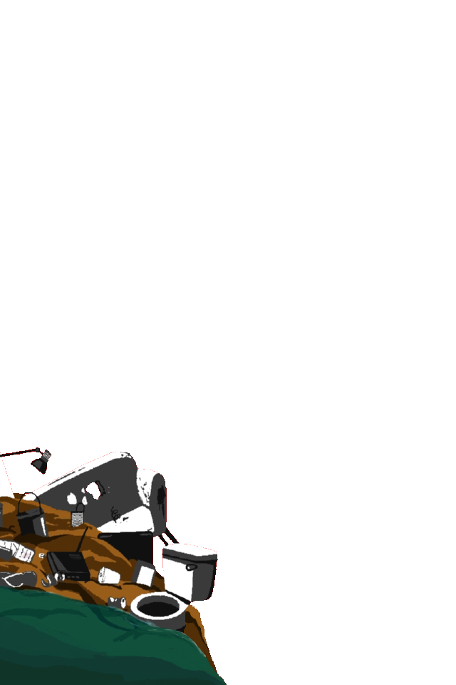
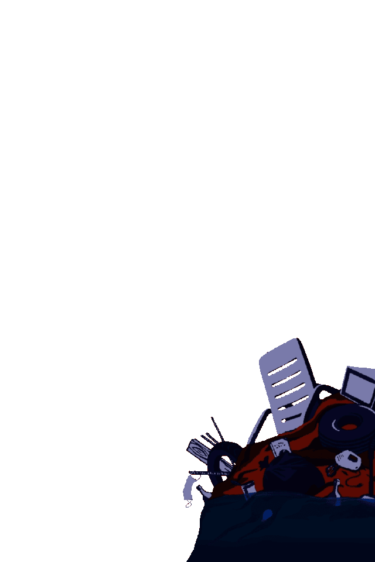
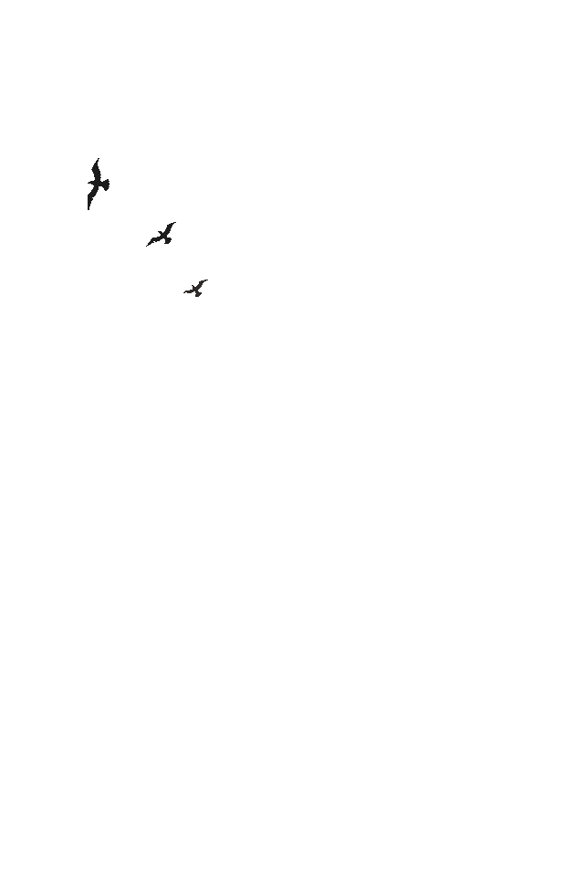
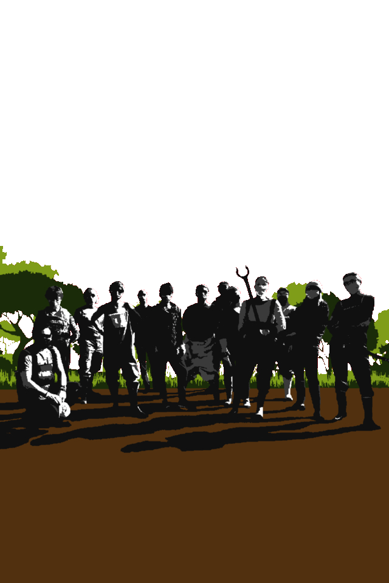
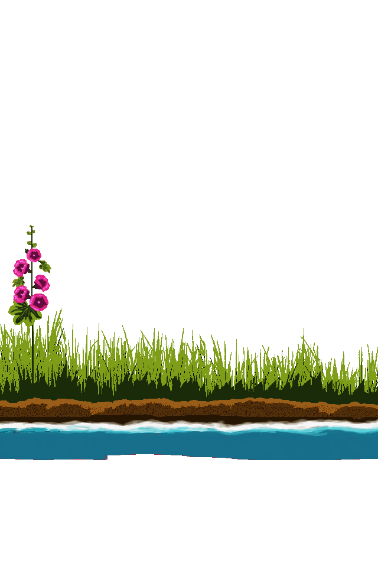
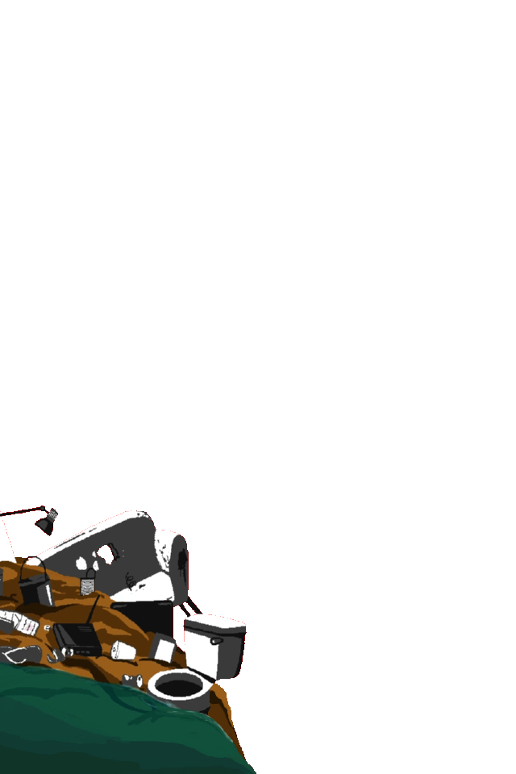
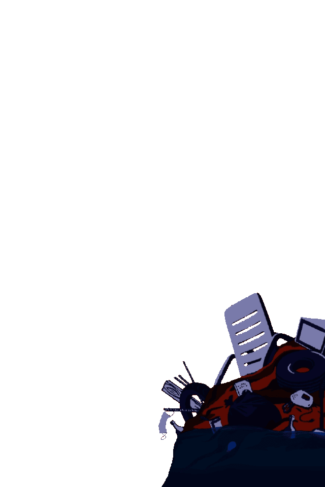
1 Sensibiliser en milieu scolaire lors d'interventions dans les écoles, collèges, lycées...
Notre association souhaite apporter son soutien et partager son expérience du terrain pour renforcer la mission éducative des enseignants. Éveiller les jeunes consciences au respect de la nature, de la biodiversité et des petits gestes à accomplir au quotiien, c'est aussi espérer qu'ils transmettent le message aux adultes plus inconscients qu'eux-mêmes quant à la catastrophe environnementale qui nous entoure.
11 octobre 2021 : Intervention auprès des élèves de l'école de Nieulle-sur-Seudre
3 classes de 20 élèves à qui nous avons présenté notre association, l’importance du tri, du recyclage ♻️, du don, des effets de la pollution sur notre environnement, les animaux…
Crédit photo : Les Insurgés des déchets
11 octobre 2021 : Intervention auprès des élèves de l'école de Nieulle-sur-Seudre
Merci aux enfants, à l’équipe pédagogique, à la mairie de nous avoir offert cela. Quel cadeau 🎁 🙏🏻
Crédit photo : Les Insurgés des déchets
18 novembre 2021 : Rencontre éco-délégués Lycée Merleau-Ponty à Rochefort
Delphine, Mimi et Raphaël sont allés à leur rencontre afin de présenter l'association et d'entrevoir des possibilités d'intervention sur les thèmes retenus par les élèves. Une matinée d'échange riche d'échanges, d'engagement et de retours d'expériences ! Nous avons hâte de concrétiser tous ces projets.
Crédit photo : Cécile Jourdy
18 novembre 2021 : Rencontre éco-délégués Lycée Merleau-Ponty à Rochefort
Les thèmes abordés : le nettoyage des plages, des rues, etc... la pollution des déchets plastiques dont les masques, la "fast fashion", la pollution numérique et le moteur de recherche ecosia, la précarité menstruelle, la filière de l'élevage et de la viande et le traitement animal, l'utilisation de l'huile de palme.
Crédit photo : Cécile Jourdy
27 juin 2022 : Intervention auprès des élèves de l'école maternelle de Nieulle-sur-Seudre
Nous leur avons présenté notre association, les effets de la pollution sur notre environnement et les animaux…grâce à des jeux et nous avons fini avec les plus grands (en toute sécurité bien sûr) par la fameuse vidéo #ecrasetacanette pour nos amis de l’association Association K Net Partage
Crédit photo : Les Insurgés des déchets
27 juin 2022 : Intervention auprès des élèves de l'école maternelle de Nieulle-sur-Seudre
Chaque enfant a reçu son diplôme de gardien(ne) de la planète 💚🌍.
Merci aux enfants, à l’équipe pédagogique, à la mairie de nous avoir offert cela.
Quelle joie de pouvoir vivre et de partager ça.
Merci pour ce cadeau 🎁 🙏🏻
Crédit photo : Les Insurgés des déchets
2 octobre 2022 : Intervention auprès des élèves de l'école des explorateurs de St-Sornin
Quel plaisir de venir à la rencontre des élèves et des enseignants de cette école Montessori. Petits mais déjà si matures et conscients des réalités !
Crédit photo : Les Insurgés des déchets
2 octobre 2022 : Intervention auprès des élèves de l'école des explorateurs de St-Sornin
Nous avons échangé sur la problématique des déchets, les impacts sur la nature, les solutions notamment en leur présentant de supers héros comme eux peuvent l’être...
Crédit photo : Les Insurgés des déchets
2 octobre 2022 : Intervention auprès des élèves de l'école des explorateurs de St-Sornin
Nous avons joué aux ramasseurs (avec des pinces bien sûr 😉) et fait le tri des déchets, puis avons terminé par le traditionnel « écrasement » de canettes pour l’association @knetpartage. Un vrai moment de partage avec les élèves et l’occasion de tester nos nouveaux déguisements (faits-maison) 😉de Mac CRADO et de CapriPasfun (5ème et 6ème déchets que nous trouvons le plus dans la nature et en ville).
Crédit photo : Les Insurgés des déchets
13 octobre 2022 : Intervention auprès des élèves du Lycée de la mer et du littoral de Bourcefranc
Un moment de partage organisé par nos adhérents en BTSA GPN (Gestion et Protection de la Nature) : Ambre, Annaëlle, Louanne et Noah. Mille mercis à vous et à vos camarades pour votre investissement, vos idées de dingue, votre confiance et vos valeurs.
Crédit photo : Les Insurgés des déchets
13 octobre 2022 : Intervention auprès des élèves du Lycée de la mer et du littoral de Bourcefranc
Plus de 50 élèves ont ramassé à nos côtés dans l'enceinte du lycée et aux alentours malgré une météo pluvieuse. Bilan : 3000 mégots 🚬(des propositions concrètes pour lutter contre ce fléau seront réalisées par nos BTSA et remises à l'encadrement du lycée)
Crédit photo : Les Insurgés des déchets
13 octobre 2022 : Intervention auprès des élèves du Lycée de la mer et du littoral de Bourcefranc
Suite du bilan : 12 canettes pour Association K Net Partage, 12 masques, 1 cartouche de gaz hilarant, 1 enjoliveur, des Micro-plastiques (situation préoccupante pour un établissement si proche du littoral), 15 paquets de cigarettes, 6 paquets de filtres, 1 stabylo, des stylos, des crayons, 1 antiséche, 2 kilos de sacs jaunes, 2 kilos de sacs noirs
Crédit photo : Les Insurgés des déchets
16 novembre 2022 : Au centre de loisirs d’Échillais, nous avons pu animer avec les plus grands deux sessions à propos des pollutions environnementales et les solutions pour réduire nos déchets. Nous avons pu leur montrer des supers héros comme eux qui agissent pour un monde meilleur comme @rafsurseine (11 ans), qui dépollue la Seine avec un aimant.

16 novembre 2022 : Les animateurs d’Echillais en ont profité pour réaliser avec les enfants des accessoires à base d’anciennes briques de lait. Bien évidemment, tout cela s'est conclu par le traditionnel écrasage de canettes ! Merci à Émilie et à toute l'équipe du centre !
21 novembre 2022 : Dans le cadre de la semaine Européenne de la réduction des déchets, nous sommes intervenus à l’école maternelle de MARENNES. Une initiative pensée par l'équipe pédagogique ! Quelle joie d’avoir pu leur présenter « Nos » déchets Mac Crado & CapriPasfun 😉🤪 alias nos superbes élèves du BTS du lycée de la mer Ambre et Anaëlle.

21 novembre 2022 : Nous avons pu présenter aux enfants des alternatives aux objets jetables du quotidien et animer 4 ateliers en petits groupes (tri, créations recyclées, rallye déchets…) qui seront répétés tout au long de la semaine. Les enfants ont tous reçu un diplôme et se font une joie de venir nous aider lors du prochain ramassage.
2 Sensibiliser en milieu professionnel...
Organiser une session de cleanwalk en entreprise répond à 3 objectifs : 1/ Ramasser pour avoir un impact concret et immédiat sur l’environnement en collectant et triant les déchets qui jonchent le sol. 2/ Être vu pour inciter les citoyens à réfléchir à comment il peuvent contribuer à leur échelle pour mettre fin à ce fléau. 3/ Fédérer car une cleanwalk permet de nouer des liens forts. Cette action ludique et conviviale permet de consolider un groupe.
21 octobre 2021 : Intervention auprès des membres du bureau de KPMG Niort
Dans la cadre de la journée de l'engagement responsable de KPMG France, Delphine Basset, carnetdemimi et Raphaël Couillaud ont accompagné les membres du bureau de Niort pour une cleanwalk. Crédit photo : Les Insurgés des déchets
21 octobre 2021 : Intervention auprès des membres du bureau de KPMG Niort
Après un briefing aux 14 participants tous très assidus (présentation de l'association, sensibilisation, consignes ..), nous avons effectué une collecte citoyenne de plus d'1h30 autour du quai Métayer.
Crédit photo : Julie Bourdin
21 octobre 2021 : Intervention auprès des membres du bureau de KPMG Niort
Le bilan : Au total presque 10 kgs dont 29 bouteilles en verre soit 5,15 kgs, 1000 mégots soit 500 000 litres d’eau qui ne seront pas pollués !
Crédit photo : Julie Bourdin
21 octobre 2021 : Intervention auprès des membres du bureau de KPMG Niort
Le bilan (la suite) : 1,7 kgs de sac jaune (recyclable : bouteille plastique, canette en alu, papier, tickets de jeu à gratter) dont 500 grammes de canettes en alu pour l'association Knetpartage, 2,7 kgs de tout venant (sac noir).
Crédit photo : Julie Bourdin
21 octobre 2021 : Intervention auprès des membres du bureau de KPMG Niort
Merci à tous les salariés de KPMG Niort pour leur accueil, leur mobilisation et leur écoute. Merci à Julie Bourdin pour l'organisation de cet évènement. Merci à Lakaa pour leur confiance.
Crédit photo : Julie Bourdin
3 Sensibiliser un maximum de monde autour d'un événement généraliste ou d'un forum en tant qu'association écocitoyenne luttant contre les pollutions humaines.
Aller à la rencontre du public, c'est aussi, à un moment ou à un autre, la vocation d'une association écocitoyenne. C’est pourquoi, participer à des campagnes ou rencontres de ce type peut être un moyen de faire prendre conscience à chacun de leur empreinte environnementale et d’agir dessus de manière ludique et instructive.
18 juillet 2021 : Participation à La journée du littoral et de la mer à Bourcefranc-Le Chapus
Notre stand avec en figure de proue le mannequin de Mimi vêtu de masques récupérés dans la nature, nettoyés, traités et cousus.
Crédit photo : Delphine Basset
18 juillet 2021 : Participation à La journée du littoral et de la mer à Bourcefranc-Le Chapus
Notre Présidente et Mimi en pleine interview.
Crédit photo : Frank Symington
18 juillet 2021 : Participation à La journée du littoral et de la mer à Bourcefranc-Le Chapus
Une création originale pour dénoncer l'amoncelllement croissant de détritus sur nos plages.
Crédit photo : Frank Symington
18 juillet 2021 : Participation à La journée du littoral et de la mer à Bourcefranc-Le Chapus
Un aquarium remplit de déchets était présenté sur le stand afin de marquer les esprits.
Crédit photo : Frank Symington
3 septembre 2021 : Participation au forum des associations Bourcefranc-Le Chapus
Delphine Basset, présidente et Raphaël Couillaud, vice-président ont répondu à vos nombreuses questions sur le stand. Notre démarche est acceptée et défendue par la totalité des personnes rencontrées. Beaucoup d'entre vous souhaitent nous rejoindre pour participer aux futurs ramassages. Cela nous encourage lorsque nous rencontrons des citoyens qui partagent les mêmes valeurs que notre groupe.
Crédit photo : Philippe Jerome
14 mai 2022 : Participation au village associatif lors du festival Volt Face à Marennes (17)
Mille mercis aux organisateurs du festival Volt face d’avoir pensé à notre association. Dans un premier temps sur la place du marché de Marennes, lors d’une matinée de sensibilisation aux pollutions humaines.
Crédit photo : Les Insurgés des déchets
14 mai 2022 : Participation au village associatif lors festival Volt Face à Marennes (17)
Sur notre stand, nos bénévoles ont notamment affiché les dessins et slogans pour la protection de l’environnement, réalisés par les élèves des écoles de Marennes et de Nieulle sur Seudre. Nous tenons d’ailleurs à les remercier pour leurs engagements et leur motivation. Leurs œuvres ont inspiré des pochoirs qui ont été utilisé l’après-midi lors d’un atelier « graffitis ».
Crédit photo : Les Insurgés des déchets
14 mai 2022 : Participation au village associatif lors festival Volt Face à Marennes (17)
Le vice-président Raphaël Couyo a déclaré à MO TV : « Soyons tous unis et agissons contre la pollution et les incivilités du quotidien ! (mégots, masques, papiers par terre). Nous étions tous mobilisés, en ce jour, espérons que les messages puissent éveiller les consciences».
Crédit photo : Les Insurgés des déchets
2 septembre 2021 : Participation au forum des associations Bourcefranc-Le Chapus
Raphaël, vice-président, Sabine, secrétaire adjointe et Patricia, bénévole, ont répondu à vos nombreuses questions sur le stand. Notre démarche est acceptée et défendue par la totalité des personnes rencontrées. Beaucoup d'entre vous souhaitent nous rejoindre pour participer aux futurs ramassages. Cela nous encourage lorsque nous rencontrons des citoyens qui partagent les mêmes valeurs que notre groupe.
Crédit photo : Les insurgés des déchets
2 septembre 2021 : Participation au forum des associations Bourcefranc-Le Chapus
Nous avons eu l'honneur d'accueillir plusieurs éléves du Lycée de la mer et du littoral qui nous ont rejoint au sein de l'association. De futurs projets en perspective !
Crédit photo : Les insurgés des déchets
17 septembre 2021 : Participation au World Clean Up Day
Le World clean up day, c'est aussi l'occasion de toucher un autre public, de sensibiliser autour de la problématique de l apollution engendrée par les déchets abandonnés. En plus du ramassage programmé ce jour-là, nous tenions un stand place Brochard à Ronce les bains (17390)
22 octobre 2021 : Cradoween
Votre association préférée était en mode crado pour célébrer Halloween quelque part dans les bois de Bourcefranc-Le Chapus (17560). Après moult péripéties 😱 et quelques frayeurs organisationnelles, nous étions dès 15h seize bénévoles pour préparer et décorer la zone de jeu. De 20 à 22h, les âmes perdues de la famille Crado se sont déchaînées pour faire frissonner les 6 équipes venues découvrir notre tout 1er escape game version déchets.
22 octobre 2021 : Cradoween
Comme vous le savez, ce qui se passe dans les bois de Bourcefranc reste dans les bois de Bourcefranc, c'est pour cela que nous avons très peu de photos à vous partager. Merci à tous les participants pour vos petits mots d'encouragement. Cela nous touche énormément et nous pousse à aller chaque fois au bout de nos idées (est-ce réellement une bonne chose ? 😂😅😂). À l'année prochaine pour Cradoween 2, le retour de la vengeance 👹. Ce sera pareil mais en mieux !! Promis.
17 décembre 2021 : Participation au Marché éco-responsable de Noël Marennes (17320)
L’occasion pour notre association de rencontrer les parents et enfants, d’exposer nos superbes créations upcyclées, d’offrir les jouets 🧸 récupérés lors de nos dépollutions et de ramasser 1200 mégots par nos courageux 🥶 bénévoles!

17 décembre 2021 : Participation au Marché éco-responsable de Noël Marennes (17320)
L’occasion d’essayer nos nouveaux costumes et de déambuler jusqu’au port. Encore une étonnante création dénommée « fishandplastic » qui a époustouflé Madame le Maire, notre HEINEKRADE (et oui un vrai fléau ces bouteilles jetées dans la nature), notre McCRADO (5ème déchet le plus retrouvé aux bords des routes 🛣️) et notre nouveau CRADOMEGOT !
4 Sensibiliser en lançant des initiatives avec les municipalités
Notre association souhaite porter la voix des écocitoyens sensibles à la pollution humaine en contribuant aux objectifs d’optimisation des municipalités dans leur gestion des déchets. Repérage de déchetteries sauvages, implantation de bacs à marée, distribution de cendriers de plage, diffusion de messages de sensibilisation, toutes ces initiatives ont l'écho des municipalités.
Été 2021 - Partenariat Ville de Marennes
Après plusieurs réunions fructueuses avec les équipes de la Ville de Marennes, nous avons eu le grand honneur de pouvoir customiser les bacs à marée bientôt installés à Marennes Plage. Les bacs à marée permettent de collecter des macro-déchets rejetés par la mer et sont aussi un bon indicateur de pollution.
Crédit photo : Delphine Basset
Été 2021 - Partenariat Ville de Marennes
La signalétique créée par nos soins figure sur les deux bacs de manière à informer les citoyens sur les déchets acceptés ou non.
Crédit photo : Delphine Basset
Été 2021 - Partenariat Ville de Marennes
Inauguration des bacs à marée à en compagnie des équipes municipales de Bourcefranc-Le Chapus et Marennes.Les deux bacs ont été réalisés avec du matériel recyclé et sont prêts à recevoir les déchets ramassés pendant vos balades sur la plage.
Crédit photo : Gérard Raybaud - Le Littoral
Été 2021 - Partenariat Ville de Marennes
À la découverte d'un bac à marée à Marennes plage. Dès leurs mises en place, les bacs ont réceptionné les déchets recueillis par les ramasseurs de 7 (ou moins) à plus de 77 ans.
Crédit photo : Yann Alsiret
27 novembre 2021: Matinée de sensibilisation pour l'opération 0 mégot à Marennes
Quelques membres de l’association (Sabine, Mimi Les, Delphine et Raphaël) ont sensibilisé les Marennais(es) concernant la pollution engendrée par les mégots jetés par terre.
Crédit photo : Loulou
27 novembre 2021: Matinée de sensibilisation pour l'opération 0 mégot à Marennes
Les déguisements faits par nos soins ont été élaboré avec du recyclage d’emballages (carton, plastiques, briques de lait…) et de sacrés fous rires 😜 ! Toujours sur le ton de l’humour et de la bienveillance, il était important de faire passer nos messages.
Crédit photo : Axel D.
14 mai 2022 : Ateliers Tags bouches d'égout
Les œuvres des élèves des écoles de Marennes et de Nieulle sur Seudre ont inspiré des pochoirs qui ont été utilisé lors d’un atelier « graffitis ».
Crédit photo : HIC (Club photo de Marennes-Hiers-Brouage)
14 mai 2022 : Ateliers Tags bouches d'égout
Une 50 taine de grands et de petits, munis de bombes de peinture (à l’eau😉) ont décoré joyeusement la ville de slogans éco-responsables.
Crédit photo : HIC (Club photo de Marennes-Hiers-Brouage)
14 mai 2022 : Ateliers Tags bouches d'égout
« Vive l’eau sans mégots », « les déchets par terre, c’est assez » avec une belle baleine et autres « Écoute ta mer » …ont fleuri la ville.
Crédit photo : Les Insurgés des déchets
14 mai 2022 : Ateliers Tags bouches d'égout
Un grand merci à la mairie de Marennes Marennes Ville, à tous les bénévoles, à la La Bigaille et aux élèves et aux professeurs impliqués.
Crédit photo : HIC (Club photo de Marennes-Hiers-Brouage)
5 juin 2022 : Journée Mondiale de l'Environnement
Nous étions présents à Marennes-Plage (17320) avec notre stand 🏠 et nos gros mégots de 10h à 18h pour aller notamment à la rencontre du public. Tous font le même constat que nous : il est plus que nécessaire de poursuivre les efforts de sensibilisation et de ressasser le fait que les mégots jetés sont toxiques pour notre environnement, nos enfants, la biodiversité, en ville, à la campagne ou sur la plage
Crédit photo : Raphaël Couillaud

5 juin 2022 : Journée Mondiale de l'Environnement
Triple objectif du jour : ramasser, sensibiliser et distribuer les cendriers de poche réalisés en partenariat avec la ville de Marennes.
Crédit photo : Raphaël Couillaud
5 juin 2022 : Journée Mondiale de l'Environnement
Notre atelier land art imaginé par Sabine, notre secrétaire adjointe, et réalisé avec l'aide de plusieurs enfants ! Félicitations !
Crédit photo : Raphaël Couillaud
5 juin 2022 : Journée Mondiale de l'Environnement
Nos créations artistiques issues des déchets récoltés ont fait sensation auprès des petits et grands ! Un autre moyen d'alerter sur la pollution plastique.
Crédit photo : Sabine Mallet
5 Sensibiliser par des ateliers artistiques de revalorisation des déchets
De la récup’ à l’art, il n'y a qu'un pas et nous l'avons franchi. Dès cet été, notre association a débuté de nouvelles activités de sensibilisation à la réduction des déchets et à la préservation de l’environnement en développant des ateliers DIY (ou « fait maison ») à la portée de tous et toutes !
On emploie même le terme "Trashion" (contraction de trash et de fashion) pour l'art, les bijoux, la mode et les objets pour la maison créés à partir d'éléments utilisés, jetés, trouvés et réutilisés. Le but premier n'est pas le recyclage mais c'est un moyen d'alerter et de faire prendre conscience que notre mode de consommation est un problème.
Bracelets en opercules de canettes recyclées
Réalisés par Sabine avec des canettes récupérées lors de nos ramassages.
Crédit photo : Sabine Mallet.
Mobiles ostréicoles
Réalisés par Caroline Chanel avec les déchets ostréicoles rejetés par la mer et retrouvés lors de ramassages sur les plages.
Crédit photo : Caroline Chanel.
Sacs cabas en dosettes de café
Réalisés par Caroline Chanel avec des paquets de dosettes transformés et assemblés pour décorer ce joli sac cabas.
Crédit photo : Caroline Chanel.
Cendriers de poche en brique de lait
Pour ne plus jeter vos mégots, vous avez juste d'une brique alimentaire (lait, jus de fruit...) nettoyée, d'une paire de ciseaux et d'un peu de technique !
Crédit photo : Delphine Basset.
Fleurs canette
De jolies fleurs pour décorer et apporter de la couleur au jardin tout au long de l'année. Réalisées par Sabine avec des canettes récupérées lors de nos ramassages.
Crédit photo : Sabine Mallet.
La robe "Mallet"
Réalisée par Sabine Mallet et sa maman, Liliane, qui du haut de ses 80 ans ont conçu cette magnifique tenue à base de briques de lait.
Crédit photo : Delphine Basset.
Défilé trashion printemps-été 2022
Défilé improvisé à la déchèterie avec les créations de @carnetdemimi et Sabine après avoir extrait 1,5 tonne de déchets sauvages de la nature à Saint-Just-Luzac (17).
Crédit photo : Math.